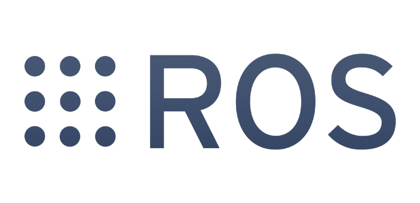
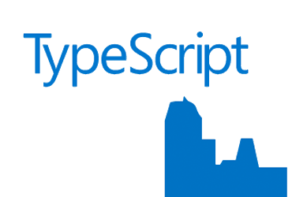

What is it made with?
ROSBridge and ROSlibJS

ROSBridge implements the rosbridge v2 protocol. It provides ROS meta data through JSON messages for any client. Therefore, it is possible to publish and subscribe topics, call services, set params and others. ROSlibJS provides JavaScript methods for the communication.
HTML & CSS

The popular web language, instead of using other browser embedded technologies, to keep it simple and lightweight.
TypeScript

The well-typed script developed by Microsoft to keep the development more scalable and easy to maintain.
Many other tools...


Automation tools and frameworks for coding improvement and maintainability. ROSWeb is developed using the most recent development tools like: NPM, GulpJS, SASS, Git.